V4: Passive Imputation
Vignette 4 of 8 · Compare to Passive imputation and Post-processing by Gerko Vink and Stef van Buuren
This walkthrough mirrors the official R **mice** tutorials in Python. Deterministic tables and formulas are checked against the R reference; stochastic imputations and plots are labelled when they may differ.
What PyMICE does differently from R
- Default randomness uses NumPy (
rng="numpy"), so imputed values may differ from R unless you setrng="r". - Categorical factors are often shown as numeric codes in console output.
- Diagnostic figures use matplotlib instead of lattice (same intent, different styling).
- See REPRODUCIBILITY.md for exact replication options.
Parity details (maintainers)
Expected to match exactly
Checked against reference/04_passive_post_processing/vignette_extracted.R:
- Step 2 — default
methandpredmatrices; modifiedpred(excludetsfromsws/ps); passivets = sws + psconsistency check (pas.impusesseed=123like R) - Step 5 —
table(complete(imp)$tv)andtable(complete(imp.pmm)$tv)frequency tables (chain-aligned goldens refreshed 2026-07-05) - Step 7 — passive
bmi = I(wgt/(hgt/100)^2); numeric constraint|bmi - calc| = 0on missing rows (visit order imputeshgt/wgtfirst)
Expected to differ (RNG / rendering)
- Step 1 — package load; passive-imputation prose only.
- Step 3 —
plot(pas.imp)matplotlib trace lines. - Step 5 — density/histogram panels for post-squeezed
tv(matplotlib vs lattice). - Steps 6–9 —
xyplot/plot(imp)matplotlib diagnostics; session stream afterrun_v04_chain()(exceptimp.pathseed=123in R). - Step 9 — triple-passive
sqrt(wgt/bmi)runs; iteration event log format differs from R.
Introduction
This is the fourth vignette in a series of six.
In this vignette we will walk you through the more advanced features of mice, such as post-processing of imputations and passive imputation.
1. Dry run predictor matrix
Note: Package load step; no R console output to compare.
import numpy as np
from pymice import mice, complete, post_squeeze
from pymice.diagnostics.plots import plot_density, plot_histogram_facets, plot_mids, plot_xy_imputed
from lib.data import load_mammalsleep_impute, load_boys_impute
from lib.viz import save_figure
from lib.r_style import format_meth_r, format_predictor_matrix, format_table_r(setup — no console output)Compare to R reference
require(mice)
require(lattice)
set.seed(123)We choose seed value 123. This is an arbitrary value; any value would be an equally good seed value. Fixing the random seed enables you (and others) to exactly replicate anything that involves random number generators. If you set the seed in your R instance to 123, you will get the exact same results and plots as we present in this document.
Passive Imputation
There is often a need for transformed, combined or recoded versions of the data. In the case of incomplete data, one could impute the original, and transform the completed original afterwards, or transform the incomplete original and impute the transformed version. If, however, both the original and the transformed version are needed within the imputation algorithm, neither of these approaches work: One cannot be sure that the transformation holds between the imputed values of the original and transformed versions. mice has a built-in approach, called passive imputation, to deal with situations as described above. The goal of passive imputation is to maintain the consistency among different transformations of the same data. As an example, consider the following deterministic function in the boys data \[\text{BMI} = \frac{\text{Weight (kg)}}{\text{Height}^2 \text{(m)}}\] or the compositional relation in the mammalsleep data: \[\text{ts} = \text{ps}+\text{sws}\]
2. Passive imputation formula
ini_ms = mice(ms_data, column_names=ms_names, maxit=0, print_flag=False)
print(format_meth_r(ms_names, ini_ms.method, style='mammalsleep')) bw brw sws ps ts mls gt pi sei odi
"" "" "pmm" "pmm" "pmm" "pmm" "pmm" "" "" ""Compare to R reference
ini <- mice(mammalsleep[, -1], maxit=0, print=F)
meth<- ini$meth
meth bw brw sws ps ts mls gt pi sei odi
"" "" "pmm" "pmm" "pmm" "pmm" "pmm" "" "" ""print(format_predictor_matrix(ms_names, ini_ms.predictor_matrix)) bw brw sws ps ts mls gt pi sei odi
bw 0 1 1 1 1 1 1 1 1 1
brw 1 0 1 1 1 1 1 1 1 1
sws 1 1 0 1 1 1 1 1 1 1
ps 1 1 1 0 1 1 1 1 1 1
ts 1 1 1 1 0 1 1 1 1 1
mls 1 1 1 1 1 0 1 1 1 1
gt 1 1 1 1 1 1 0 1 1 1
pi 1 1 1 1 1 1 1 0 1 1
sei 1 1 1 1 1 1 1 1 0 1
odi 1 1 1 1 1 1 1 1 1 0Compare to R reference
pred <- ini$pred
pred bw brw sws ps ts mls gt pi sei odi
bw 0 1 1 1 1 1 1 1 1 1
brw 1 0 1 1 1 1 1 1 1 1
sws 1 1 0 1 1 1 1 1 1 1
ps 1 1 1 0 1 1 1 1 1 1
ts 1 1 1 1 0 1 1 1 1 1
mls 1 1 1 1 1 0 1 1 1 1
gt 1 1 1 1 1 1 0 1 1 1
pi 1 1 1 1 1 1 1 0 1 1
sei 1 1 1 1 1 1 1 1 0 1
odi 1 1 1 1 1 1 1 1 1 0pred_ms_mod = pred_ms.copy()
for row in ("sws", "ps"):
pred_ms_mod[ms_names.index(row), ms_names.index("ts")] = 0
print(format_predictor_matrix(ms_names, pred_ms_mod)) bw brw sws ps ts mls gt pi sei odi
bw 0 1 1 1 1 1 1 1 1 1
brw 1 0 1 1 1 1 1 1 1 1
sws 1 1 0 1 0 1 1 1 1 1
ps 1 1 1 0 0 1 1 1 1 1
ts 1 1 1 1 0 1 1 1 1 1
mls 1 1 1 1 1 0 1 1 1 1
gt 1 1 1 1 1 1 0 1 1 1
pi 1 1 1 1 1 1 1 0 1 1
sei 1 1 1 1 1 1 1 1 0 1
odi 1 1 1 1 1 1 1 1 1 0Compare to R reference
pred[c("sws", "ps"), "ts"] <- 0
pred bw brw sws ps ts mls gt pi sei odi
bw 0 1 1 1 1 1 1 1 1 1
brw 1 0 1 1 1 1 1 1 1 1
sws 1 1 0 1 0 1 1 1 1 1
ps 1 1 1 0 0 1 1 1 1 1
ts 1 1 1 1 0 1 1 1 1 1
mls 1 1 1 1 1 0 1 1 1 1
gt 1 1 1 1 1 1 0 1 1 1
pi 1 1 1 1 1 1 1 0 1 1
sei 1 1 1 1 1 1 1 1 0 1
odi 1 1 1 1 1 1 1 1 1 0Note: PyMICE verifies circular ts = sws+ps constraint numerically; R prints nothing.
meth_ms["ts"] = "~ I(sws + ps)"
pas_imp = mice(ms_data, column_names=ms_names, method=meth_ms, predictor_matrix=pred_ms_mod, m=5, maxit=10, seed=123, print_flag=False)max |ts - (sws+ps)| on imputed rows: 0.00e+00Compare to R reference
meth["ts"]<- "~ I(sws + ps)"
pas.imp <- mice(mammalsleep[, -1], meth=meth, pred=pred, maxit=10, seed=123, print=F)We used a custom predictor matrix and method vector to tailor our imputation approach to the passive imputation problem. We made sure to exclude ts as a predictor for the imputation of sws and ps to avoid circularity.
We also gave the imputation algorithm 10 iterations to converge and fixed the seed to 123 for this mice instance. This means that even when people do not fix the overall R seed for a session, exact replication of results can be obtained by simply fixing the seed for the random number generator within mice. Naturally, the same input (data) is each time required to yield the same output (mids-object).
3. Passive convergence trace
Note: Matplotlib equivalent of the R lattice plot.
plot_mids(pas_imp, variables=['sws', 'ps', 'ts'])(plot below)Compare to R reference
plot(pas.imp)We can see that the pathological nonconvergence we experienced before has been properly dealt with. The trace lines for the sleep variable look okay now and convergence can be inferred by studying the trace lines.
Remember that we imputed the boys data in the previous tutorial with pmm and with norm. One of the problems with the imputed values of tv with norm is that there are negative values among the imputations. Somehow we should be able to lay a constraint on the imputed values of tv.
The mice() function has an argument called post that takes a vector of strings of R commands. These commands are parsed and evaluated after the univariate imputation function returns, and thus provides a way of post-processing the imputed values while using the processed version in the imputation algorithm. In other words; the post-processing allows us to manipulate the imputations for a particular variable that are generated within each iteration. Such manipulations directly affect the imputated values of that variable and the imputations for other variables. Naturally, such a procedure should be handled with care.
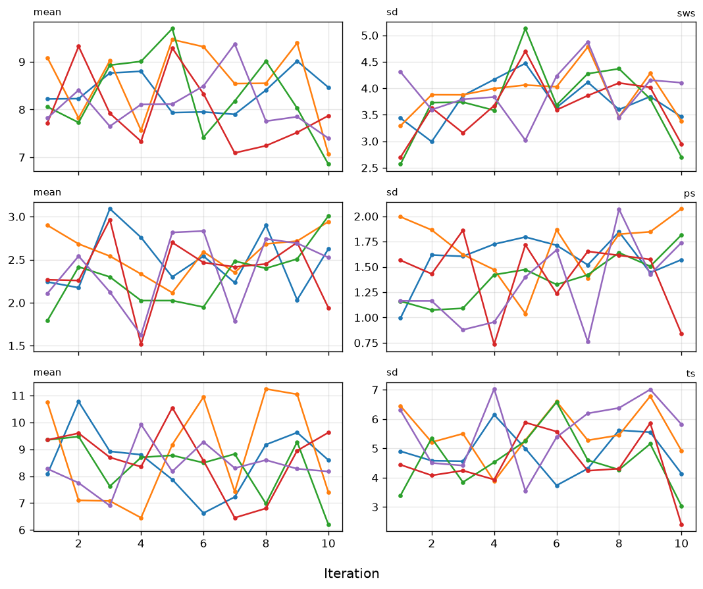
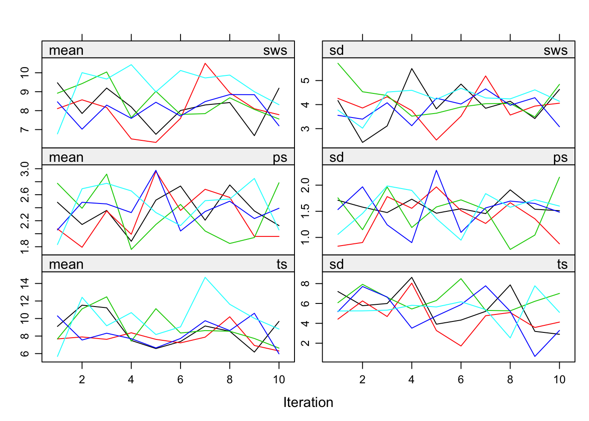
Post-processing of the imputations
4. PMM versus norm post
Note: Constrained norm imputation via post_squeeze(1, 25).
meth_tv = dict(ini_boys.method); meth_tv['tv'] = 'norm'
imp_norm_post = mice(boys, column_names=boy_names, method=meth_tv, post={'tv': post_squeeze(1, 25)}, m=5, maxit=5, print_flag=False)(imp created — no console output)Compare to R reference
ini <- mice(boys, maxit = 0)
meth <- ini$meth
meth["tv"] <- "norm"
post <- ini$post
post["tv"] <- "imp[[j]][, i] <- squeeze(imp[[j]][, i], c(1, 25))"
imp <- mice(boys, meth=meth, post=post, print=FALSE)In this way the imputed values of tv are constrained (squeezed by function squeeze()) between 1 and 25.
5. Density comparison
First, we recreate the default pmm solution
Note: Creates imp.pmm object; R vignette prints no console output here.
imp_pmm = mice(boys, column_names=boy_names, m=5, maxit=5, print_flag=False)(pmm imputation — no printed output)Compare to R reference
imp.pmm <- mice(boys, print=FALSE)print(_tv_table(imp_norm_post, boy_names)) 1 2 3 4 5 6 7 8 9 10 11 12 13 14 15 16 17 18 19 20 21 22 23 24 25
319 31 28 27 12 16 8 17 3 24 9 22 9 6 43 12 13 13 8 50 7 8 4 11 48Compare to R reference
table(complete(imp)$tv) 1 2 3 4 5 6 7 8 9 10 11 12 13 14 15 16 17 18 19 20 21 22 23 24 25
319 31 28 27 12 16 8 17 3 24 9 22 9 6 43 12 13 13 8 50 7 8 4 11 48print(_tv_table(imp_pmm, boy_names)) 1 2 3 4 5 6 8 9 10 12 13 14 15 16 17 18 20 25
75 153 99 102 5 18 34 2 28 29 3 2 57 2 3 4 75 57Compare to R reference
table(complete(imp.pmm)$tv) 1 2 3 4 5 6 8 9 10 12 13 14 15 16 17 18 20 25
75 153 99 102 5 18 34 2 28 29 3 2 57 2 3 4 75 57It is clear that the norm solution does not give us integer data as imputations. Next, we inspect and compare the density of the incomplete and imputed data for the constrained solution.
Note: Density of post-squeezed norm tv imputations.
plot_density(imp_norm_post, 'tv')(plot below)Compare to R reference
densityplot(imp, ~tv)A nice way of plotting the histograms of both datasets simultaneously is by creating first the dataframe (here we named it tvm) that contains the data in one column and the imputation method in another column.
Note: Matplotlib equivalent of the R lattice plot.
plot_histogram_facets(
{'norm': complete(imp_norm_post, 1)[:, tv_i],
'pmm': complete(imp_pmm, 1)[:, tv_i]},
variable='tv', facet_order=['norm', 'pmm'], n_bins=25)(plot below)Compare to R reference
tv <- c(complete(imp.pmm)$tv, complete(imp)$tv)
method <- rep(c("pmm", "norm"), each = nrow(boys))
tvm <- data.frame(tv = tv, method = method)
histogram( ~tv | method, data = tvm, nint = 25)Is there still a difference in distribution between the two different imputation methods? Which imputations are more plausible do you think?
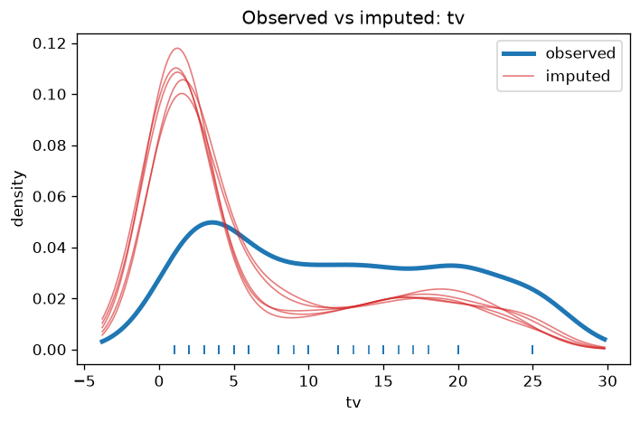
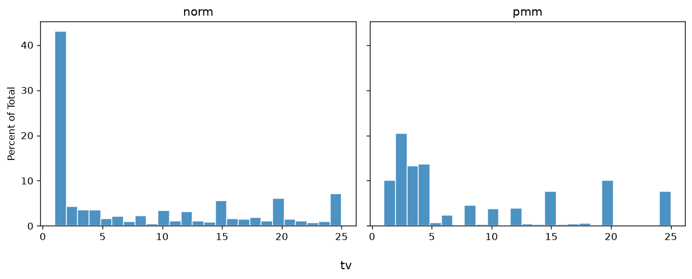
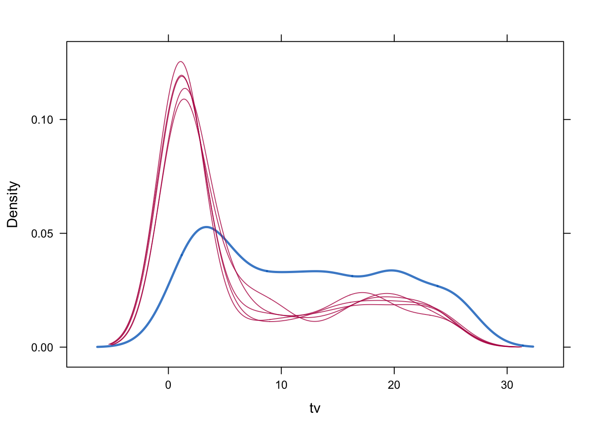
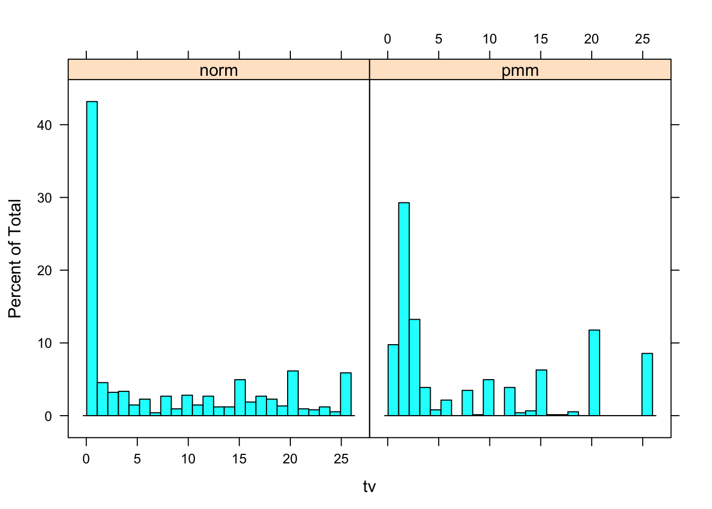
6. XY plot default PMM
Note: R xyplot uses norm+post imp from step 4; PyMICE plots default PMM (imp_pmm) to show BMI inconsistency before passive imputation in step 7.
miss_bmi = np.isnan(boys[:, boy_names.index('bmi')])
plot_xy_imputed(imp_pmm, 'bmi', _calc_bmi(complete(imp_pmm, 1), boy_names))(plot below)Compare to R reference
miss <- is.na(imp$data$bmi)
xyplot(imp, bmi ~ I (wgt / (hgt / 100)^2),
na.groups = miss, cex = c(0.8, 1.2), pch = c(1, 20),
ylab = "BMI (kg/m2) Imputed", xlab = "BMI (kg/m2) Calculated")With this plot we show that the relation between hgt, wgt and bmi is not preserved in the imputed values. In order to preserve this relation, we should use passive imputation.
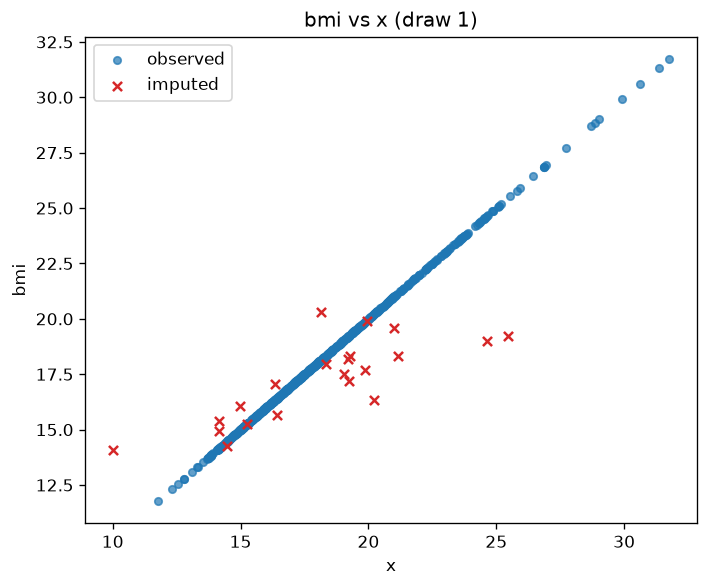
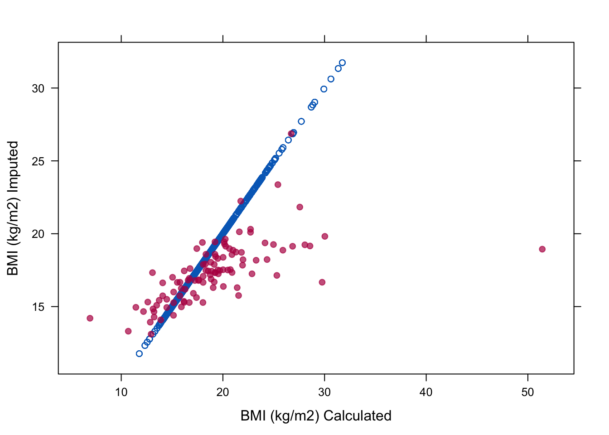
7. Passive BMI from weight and height
meth_boys["bmi"] = "~ I(wgt / (hgt / 100)^2)"
imp_bmi_circ = mice(boys, column_names=boy_names, method=meth_boys, m=5, maxit=5, print_flag=False)max |bmi - wgt/(hgt/100)^2| on missing rows: 0.00e+00Compare to R reference
meth<- ini$meth
meth["bmi"]<- "~ I(wgt / (hgt / 100)^2)"
imp <- mice(boys, meth=meth, print=FALSE)8. Circular passive imputation
To inspect the relation:
Note: Matplotlib equivalent of the R lattice plot.
plot_xy_imputed(imp_bmi_circ, 'bmi', _calc_bmi(complete(imp_bmi_circ, 1), boy_names))(plot below)Compare to R reference
xyplot(imp, bmi ~ I(wgt / (hgt / 100)^2), na.groups = miss,
cex = c(1, 1), pch = c(1, 20),
ylab = "BMI (kg/m2) Imputed", xlab = "BMI (kg/m2) Calculated")To study convergence for bmi alone:
Note: Matplotlib equivalent of the R lattice plot.
plot_mids(imp_bmi_circ, variables=['bmi'])(plot below)Compare to R reference
plot(imp, c("bmi"))Although the relation of bmi is preserved now in the imputations we get absurd imputations and on top of that we clearly see there are some problems with the convergence of bmi. The problem is that we have circularity in the imputations. We used passive imputation for bmi but bmi is also automatically used as predictor for wgt and hgt. This can be solved by adjusting the predictor matrix.
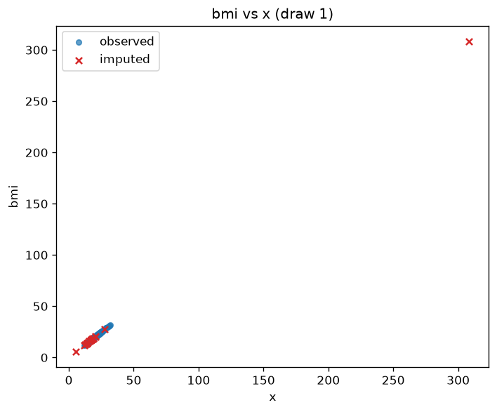
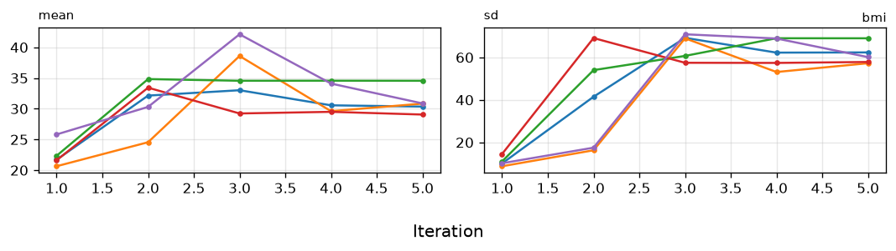
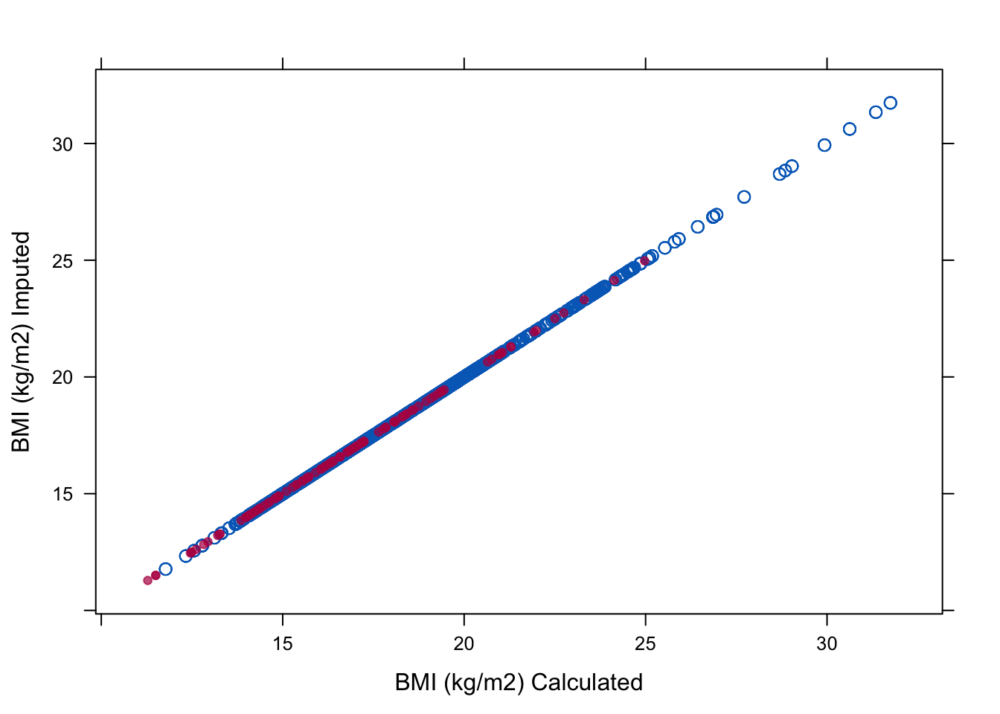
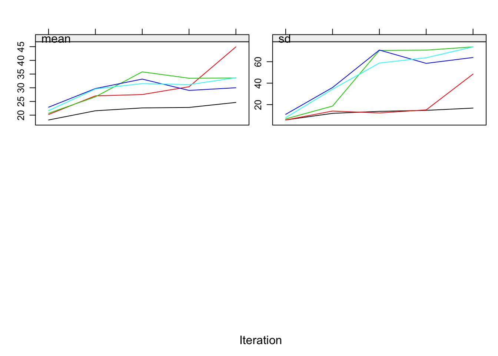
9. Fixed passive imputation
First, we remove bmi as a predictor for hgt and wgt to remove circularity.
print(format_predictor_matrix(boy_names, ini_boys.predictor_matrix)) age hgt wgt bmi hc gen phb tv reg
age 0 1 1 1 1 1 1 1 1
hgt 1 0 1 1 1 1 1 1 1
wgt 1 1 0 1 1 1 1 1 1
bmi 1 1 1 0 1 1 1 1 1
hc 1 1 1 1 0 1 1 1 1
gen 1 1 1 1 1 0 1 1 1
phb 1 1 1 1 1 1 0 1 1
tv 1 1 1 1 1 1 1 0 1
reg 1 1 1 1 1 1 1 1 0Compare to R reference
pred<-ini$pred
pred age hgt wgt bmi hc gen phb tv reg
age 0 1 1 1 1 1 1 1 1
hgt 1 0 1 1 1 1 1 1 1
wgt 1 1 0 1 1 1 1 1 1
bmi 1 1 1 0 1 1 1 1 1
hc 1 1 1 1 0 1 1 1 1
gen 1 1 1 1 1 0 1 1 1
phb 1 1 1 1 1 1 0 1 1
tv 1 1 1 1 1 1 1 0 1
reg 1 1 1 1 1 1 1 1 0print(format_predictor_matrix(boy_names, pred_boys_mod)) age hgt wgt bmi hc gen phb tv reg
age 0 1 1 1 1 1 1 1 1
hgt 1 0 1 0 1 1 1 1 1
wgt 1 1 0 0 1 1 1 1 1
bmi 1 1 1 0 1 1 1 1 1
hc 1 1 1 1 0 1 1 1 1
gen 1 1 1 1 1 0 1 1 1
phb 1 1 1 1 1 1 0 1 1
tv 1 1 1 1 1 1 1 0 1
reg 1 1 1 1 1 1 1 1 0Compare to R reference
pred[c("hgt", "wgt"), "bmi"] <- 0
pred age hgt wgt bmi hc gen phb tv reg
age 0 1 1 1 1 1 1 1 1
hgt 1 0 1 0 1 1 1 1 1
wgt 1 1 0 0 1 1 1 1 1
bmi 1 1 1 0 1 1 1 1 1
hc 1 1 1 1 0 1 1 1 1
gen 1 1 1 1 1 0 1 1 1
phb 1 1 1 1 1 1 0 1 1
tv 1 1 1 1 1 1 1 0 1
reg 1 1 1 1 1 1 1 1 0and we run the mice algorithm again with the new predictor matrix (we still ‘borrow’ the imputation methods object meth from before)
Note: R vignette shows code only before diagnostic plots.
imp_bmi = mice(boys, column_names=boy_names, method=meth_boys, predictor_matrix=pred_boys_mod, m=5, maxit=5, print_flag=False)(imputation with fixed predictor matrix — no printed output)Compare to R reference
imp <-mice(boys, meth=meth, pred=pred, print=FALSE)Second, we recreate the plots from Assignment 8. We start with the plot to inspect the relations in the observed and imputed data
Note: Matplotlib equivalent of the R lattice plot.
plot_xy_imputed(imp_bmi, 'bmi', _calc_bmi(complete(imp_bmi, 1), boy_names))(plot below)Compare to R reference
xyplot(imp, bmi ~ I(wgt / (hgt / 100)^2), na.groups = miss,
cex=c(1, 1), pch=c(1, 20),
ylab="BMI (kg/m2) Imputed", xlab="BMI (kg/m2) Calculated")and continue with the trace plot to study convergence
Note: Matplotlib equivalent of the R lattice plot.
plot_mids(imp_bmi, variables=['bmi'])(plot below)Compare to R reference
plot(imp, c("bmi"))All is well now!
Conclusion
We have seen that the practical execution of multiple imputation and pooling is straightforward with the R package mice. The package is designed to allow you to assess and control the imputations themselves, the convergence of the algorithm and the distributions and multivariate relations of the observed and imputed data.
It is important to ‘gain’ this control as a user. After all, we are imputing values and taking their uncertainty properly into account. Being also uncertain about the process that generated those values is therefor not a valid option.
For fun: what you shouldn’t do with passive imputation
Never set all relations fixed. You will remain with the starting values and waste your computer’s energy (and your own).
Note: R vignette prints iteration log; PyMICE runs imputation without event log.
meth_path = dict(ini_boys.method)
meth_path["bmi"] = "~ I(wgt/(hgt/100)^2)"
meth_path["wgt"] = "~ I(bmi*(hgt/100)^2)"
meth_path["hgt"] = "~ I(sqrt(wgt/bmi)*100)"
imp_path = mice(boys, column_names=boy_names, method=meth_path, predictor_matrix=pred_boys, m=5, maxit=5, seed=123, print_flag=False)(triple passive imputation — no printed output)Compare to R reference
ini <- mice(boys, maxit=0)
meth<- ini$meth
pred <- ini$pred
meth["bmi"]<- "~ I(wgt/(hgt/100)^2)"
meth["wgt"]<- "~ I(bmi*(hgt/100)^2)"
meth["hgt"]<- "~ I(sqrt(wgt/bmi)*100)"
imp.path <- mice(boys, meth=meth, pred=pred, seed=123)Note: Matplotlib equivalent of the R lattice plot.
plot_mids(imp_path, variables=['hgt', 'wgt', 'bmi'])(plot below)Compare to R reference
plot(imp.path, c("hgt", "wgt", "bmi"))We named the mids- object imp.path, because the nonconvergence is pathological in this example!
- End of Vignette
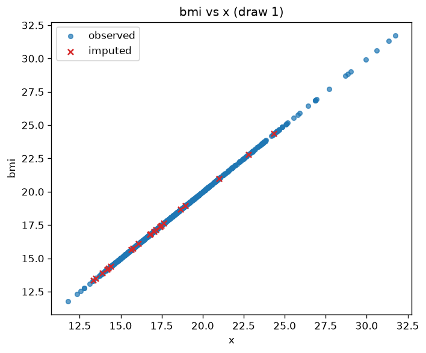
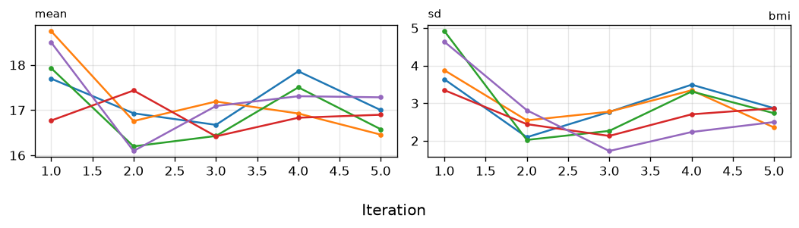
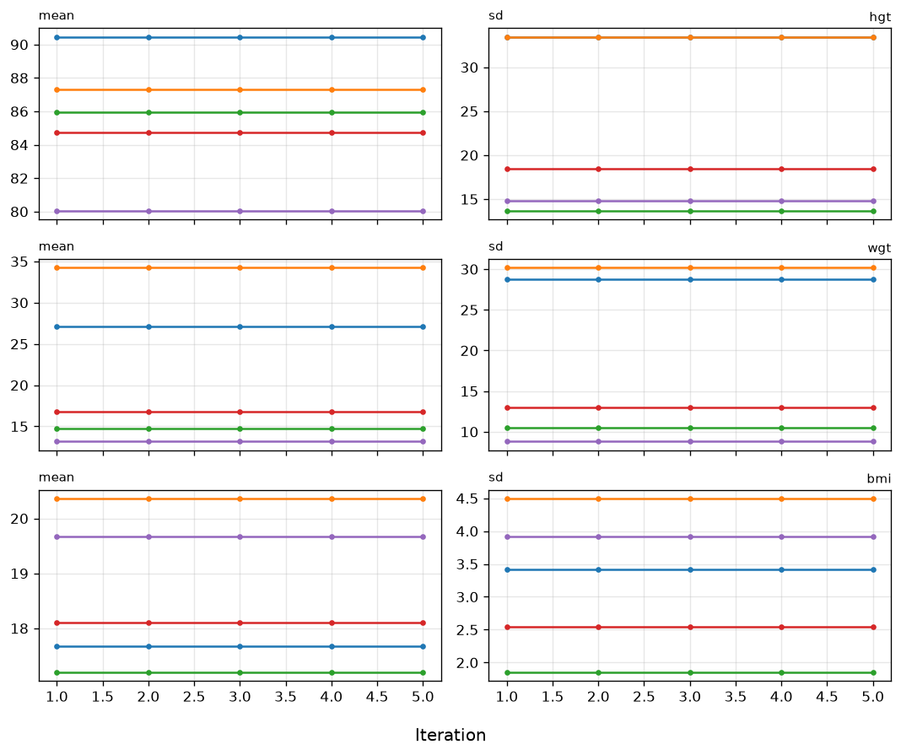
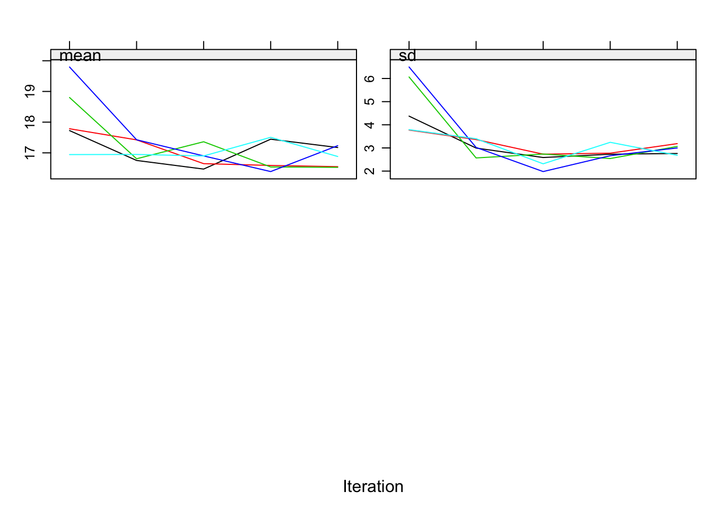
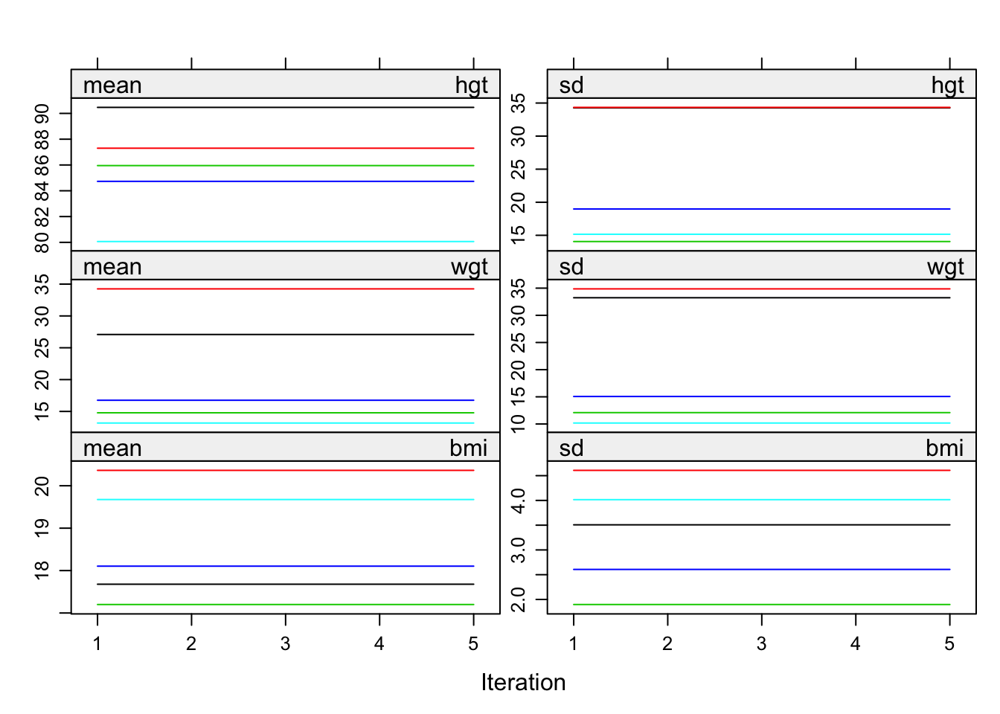